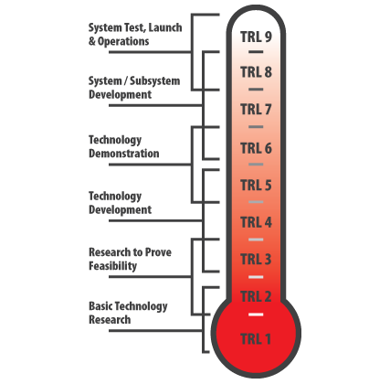

TRLs Revisited

TRL 1
Basic principles observed and reported
Lowest level of technology readiness. Scientific research begins to be translated into applied research and development. Examples might include paper studies of a technology's basic properties.
TRL 2
Technology concept and / or application formulated
Invention begins. Once basic principles are observed, practical applications can be invented. Applications are speculative and there may be no proof or detailed analysis to support the assumptions. Examples are limited to analytic studies.
TRL 3
Analytical and experimental critical function and / or characteristic proof of concept
Active research and development is initiated. This includes analytical studies and laboratory studies to physically validate analytical predictions of separate elements of the technology. Examples include components that are not yet integrated or representative.
TRL 4
Component and / or breadboard validation in laboratory environment
Basic technological components are integrated to establish that they will work together. This is relatively low fidelity compared to the eventual system. Examples include integration of ad hoc hardware in the laboratory.
TRL 5
Component and / or breadboard validation in relevant environment
Fidelity of breadboard technology increases significantly. The basic technological components are integrated with reasonably realistic supporting elements so it can be tested in a simulated environment. Examples include high fidelity laboratory integration of components.
TRL 6
System / subsystem model or prototype demonstration in a relevant environment
Representative model or prototype system, which is well beyond that of TRL 5, is tested in a relevant environment. Represents a major step up in a technology's demonstrated readiness. Examples include testing a prototype in a high-fidelity laboratory environment or in simulated operational environment.
TRL 7
System prototype demonstration in an operational environment
Prototype near, or at, planned operational system. Represents a major step up from TRL 6, requiring demonstration of an actual system prototype in an operational environment such as an aircraft, vehicle, or space. Examples include testing the prototype in a test bed aircraft.
TRL 8
Actual system completed and qualified through test and demonstration
Technology has been proven to work in its final form and under expected conditions. In almost all cases, this TRL represents the end of true system development. Examples include developmental test and evaluation of the system in its intended weapon system to determine if it meets design specifications.
TRL 9
Actual system proven through successful mission operations
Actual application of the technology in its final form and under mission conditions, such as those encountered in operational test and evaluation. Examples include using the system under operational mission conditions.